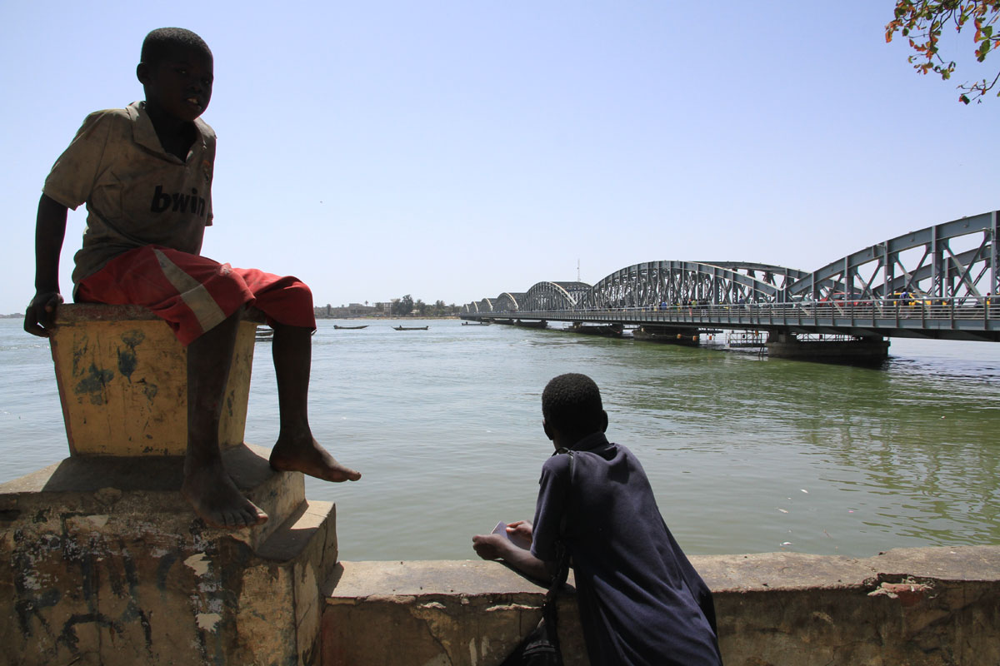
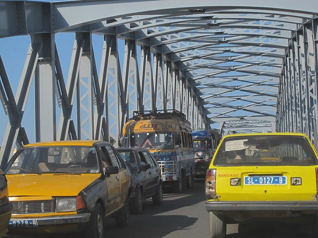
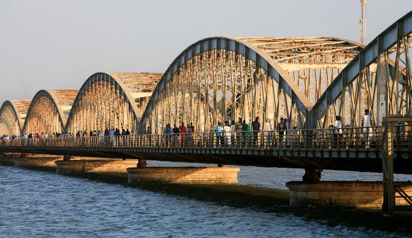
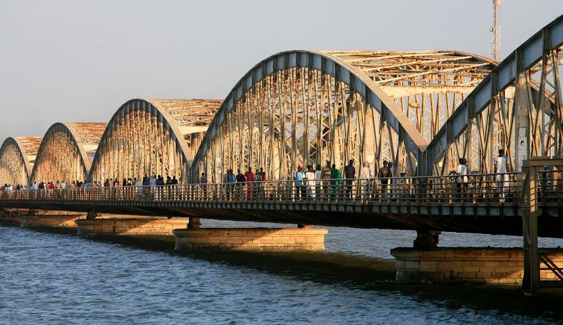

Le Pont Faidherbe de Saint-Louis


 

Quand le pont Faidherbe n’existait pas
La ville de Saint-Louis-du-Sénégal fut longtemps la capitale de
la Colonie éponyme . Son noyau central, administratif et commercial
étant bâti sur une île, séparé par le petit bras du fleuve Sénégal des
banlieues de Guet-Ndar et Ndar-Toute (où furent construits les premiers
villages de pêcheurs sur la langue de Barbarie) et du continent par le
grand bras de celui-ci.
Au premier temps de la colonisation, on se rendait à Saint-Louis au moyen
de différents types d’embarcations, la pirogue étant la plus commune. Des
barges transportaient les troupes encasernées dans l’île ainsi que les chevaux
des spahis. Les caravanes peuhles amenant les troupeaux de bœufs faisaient passer
ceux-ci par le gué de Bop Nkior. (Bopp Thior)
Le 10 juin 1958, est inauguré un bac lors de festivités présidées par Louis Faidherbe.
Le bac pouvait transporter jusqu’à 150 passagers. Il chargeait également des marchandises
et des animaux, au rythme de 10 rotations journalières, pour le prix de 5 centimes par
personne, 50 par cheval, chameau, bœuf ou voiture.
Très vite, ce moyen de transport s’avèrera insuffisant au regard de l’accroissement du
trafic et de l’intensification de l’activité commerciale. Un second bac est adjoint et
une chaloupe mise en service en cas d’urgence : la répugnance des animaux à s’embarquer
était constamment facteur de retard. L’escadron de spahis ne put jamais traverser en
moins de deux heures, alors qu’ en raison de l’insécurité dans la région, il lui fallait
souvent intervenir dans l’urgence. Il arriva qu’à la mauvaise saison le bac soit entraîné
en pleine mer, tandis que les chaînes de halage se rompaient périodiquement. Moyennant quoi,
le trafic pouvait être interrompu la journée entière.
Le premier pont Faidherbe, un pont flottant
En 1860, le capitaine Robin, intérimaire de Faidherbe parti momentanément en métropole,
obtient du Prince Jérôme-Napoléon, ministre de l’Algérie et des Colonies, un accord pour
l’établissement d’une liaison permanente.
L’adjudication portera sur un pont flottant. Celui-ci comprenait 40 pontons en tôle – d’un
poids unitaire de 40 tonnes -, l’ensemble supportant un tablier en bois. Grâce à une
« portière » de 3 pontons, le passage des navires était assuré.
La partie flottante était longue de 355 mètres, pour une longueur totale de 680 mètres.
Au total, cet ouvrage coûta 400000 francs. Il fut inauguré le 2 juillet 1865, année du
départ définitif du Gouverneur vers la Métropole . Un décret impérial attribua à ce
franchissement le nom de « Pont Faidherbe ». Peu après, un chemin de fer est décidé, construit puis mis en service entre Saint-Louis
et Dakar, provoquant une nouvelle et très forte augmentation des échanges entre l’île- restée
le centre économique de la Cité et politique de tout le pays, avec Sor, terminus du train sur
le continent . Son ouverture, en 1885, s’accompagne de la mise en place de restrictions dans
l’usage du pont flottant. Ainsi, un arrêté est pris interdisant la traversée aux véhicules de
plus de 1500 kg, l’étroitesse du tablier (4 mètres) rendait difficiles les croisements.Peu après, un chemin de fer est décidé, construit puis mis en service entre Saint-Louis et
Dakar, provoquant une nouvelle et très forte augmentation des échanges entre l’île- restée
le centre économique de la Cité et politique de tout le pays, avec Sor, terminus du train
sur le continent . Son ouverture, en 1885, s’accompagne de la mise en place de restrictions
dans l’usage du pont flottant. Ainsi, un arrêté est pris interdisant la traversée aux véhicules
de plus de 1500 kg, l’étroitesse du tablier (4 mètres) rendait difficiles les croisements.
Les coûts d’entretien ne cessent d’augmenter. Une équipe permanente doit affectée au vidage de
l’eau infiltrée. L’ouverture quotidienne de la porte pour le passage des bateaux s’avère également
plus difficile que prévue. Néanmoins, malgré ces inconvénients et sa dégradation progressive, l’ouvrage
restera en service 32 ans.
La décision de réaliser une liaison fixe
Dans son discours d’ouverture à la session de décembre 1891 du Conseil général, le gouverneur de
Lamothe proposa à l’assemblée d’examiner la possibilité de contracter un emprunt destiné non seulement
à apurer les dettes de la colonie vis-à-vis de la métropole, mais également de réaliser un programme
de travaux publics urgents. Couchard signala à ses collègues que le budget se présentait dans des
conditions favorables, et les conseillers décidèrent de négocier un emprunt de cinq millions. En séance
extraordinaire, ils déterminèrent les affectations de l’emprunt projeté. L’article le plus important fut
réservé à la construction d’un pont métallique reliant Saint-Louis à Sor. L’ouverture de cet emprunt fut
autorisé par un décret de Sadi Carnot du 21 novembre 1892. La Caisse des Dépôts et Consignations consentit
à n’accepter un taux d’intérêt que de 4 %.
Le Ministère des Colonies organise à Paris la consultation des entreprises candidates à la construction. Ainsi,
la Commission du Pont Faidherbe crée au sein du Conseil général du Sénégal recevra les dossiers de 5 entreprises
soumissionnaires. Après étude, elle en retient deux :
– celui de NOUGUIER KESSLER & C°, ancienne maison JOLY, d’Argenteuil ;
– celui de la Société de Construction de Levallois-Perret , anciens établissements EIFFEL
Le choix du projet
Le jugeant techniquement plus étudié, la Commission du Conseil Général propose d’adopter le projet de la Société
de Levallois-Perret, ex-Eiffel, rejoignant ainsi l’avis de la Commission technique compétente instituée à Paris
au niveau des Ministères concernés (Colonies et Travaux Publics).
Mais le chef du Service des Travaux Publics de la Colonie, Robert, et avec lui certains Conseillers, sont d’un
avis différent. Considérant le projet Nouguier- Kessler & Cie supérieur du point de vue esthétique, ils plaident
très activement en sa faveur et finissent par emporter l’adhésion de la majorité du Conseil colonial, les coûts
étant identiques : 1 880 000 francs.
Le pont choisi sera du type « pont-tournant », construit en treillis d’acier, d’un poids total de 1 300 tonnes.
Sa longueur totale est de 508,60 mètres. Ses travées sont de longueur inégale. L’une mesure 42,92 m., 2 autres
36,55 m., 5 autres 8,26 m. chacune.
La construction durera de 1894 à 1897 pour conduire à deux inaugurations successives.
La première – provisoire – par le gouverneur-général Chaudié le jour de la fête nationale (14 juillet 1897). Madame Chaudié coupa
les rubans barrant les issues de l’ouvrage. Le gouverneur et sa suite se mirent sur la travée tournante qui s’ouvrit, livrant
passage à l’aviso l’Ardent. Par ailleurs, 21 coups de canon avaient été tirés au lever et au coucher du soleil, plusieurs courses de
chevaux et d’ânes avec pari mutuel avaient eu lieu, de même qu’une fantasia, un mât de cocagne, des régates, une revue des troupes,
une distribution de secours aux nécessiteux, une retraite aux flambeaux, l’illumination des monuments publics, un feu d’artifice.
Le lendemain, Chaudié partait en congé en France.
La seconde inauguration le fut par André Lebon, premier ministre des Colonies à se rendre au Sénégal, à l’invitation du Conseil
général et de la municipalité. Elle eut lieu le 19 octobre. Dans son discours, Léon d’Erneville, président du Conseil général,
rappela que ce pont était œuvre exclusive du budget local. Il démontre que nos colonies, si calomniées, ont plus de ressources qu’on ne veut bien le dire.
A nouveau, la cérémonie fut l’occasion de festivités diverses.
Des mythes qui perdurent
Cette seconde manifestation est l’occasion pour le Président du Conseil Général de la Colonie de rappeler que le financement de l’ouvrage était l’œuvre
exclusive du budget de la Colonie, à l’origine de la commande ; l’emprunt souscrit pour ces travaux devant être supporté par elle seule.
Ces propos étaient ils à l’avance une réponse à la rumeur qui s’amplifiait en métropole, selon laquelle ce pont avait été un don de la France à sa Colonie ?
Par la suite, un autre mythe allait aussi naître : celui d’un pont qui, à l’origine, aurait été destiné à une autre colonie (l’Indochine ?) pour être
finalement détourné sur le Sénégal…. Et un autre encore : qu’il s’agirait d’un Pont Eiffel alors que précisément, le projet présenté par cette Société
avait été écarté par le Conseil général de la Colonie, laquelle, en l’occurrence, avait choisi l’ouvrage jugé par elle le plus harmonieux artistiquement.
Contre l’avis de la métropole.
Mythes qui ont la vie dure. Pour le vérifier, il suffit de lire les différents guides touristiques (français), sans doute fascinés par la personnalité
de Gustave Eiffel et pas toujours très soucieux d’exactitude. Exemple, parmi d’autres : le Guide du Routard (édition 2003) qui nous raconte cette énormité :
« Construit par Gustave Eiffel pour franchir le Danube en Autriche-Hongrie et expédié à Saint-Louis en 1897 à la suite d’une gigantesque erreur administrative !
Et finalement, sa longueur convenant tout à fait, on le garda (page 215) »…